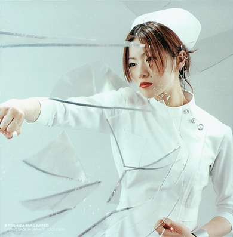

I am Enjoing music artists such as Ceephax Acid Crew, Squarepusher, And others ....
Am also Enhoing Sheena RIngo always....

Fistbump!
Taiko Songs What I love...
mint tears... yozakura shanikusai... menkui miracle... takkyu de dakkyu... gekkabijin... fuun! bachiosensei... all of these...
Gekkabijin
Menkui Miracle
Uchuu SAMURAI
Yozakura Shanikusai
Karui Zawameki
Et cetera
Neko Kujira
Diet Padarise
Eringi no Ekubo.
I add more or less when I feel, as I enjoy more songs!
These arenot the limits of my luv.